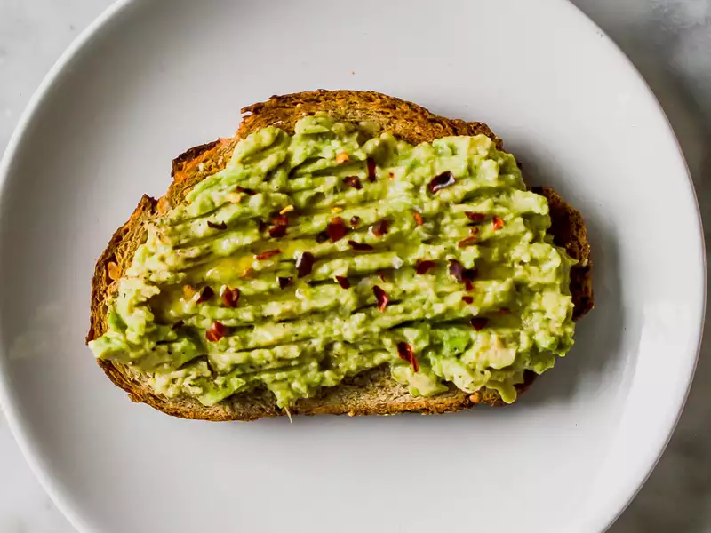

Avocado Toast

Description
Avocado Toast is a type of sandwich consisting of toast with mashed avocado, and usually salt, black pepper, and sometimes citrus juice.
Ingredients
- 1/2 small avocado
- 1/2 teaspoon fresh lemon juice
- 1/8 teaspoon Kosher salt
- 1/8 teaspoon freshly ground black pepper
- 1 slice whole grain bread
- 1/2 teaspoon extra-virgin olive oil
- Optional: red pepper flakes, Maldon sea salt flakes
Steps
- In a small bowl, combine avocado, lemon juice, salt, and pepper. Gently mash with the back of a fork.
- Top toasted bread with mashed avocado mixture. Drizzle with olive oil and sprinkle over desired toppings.